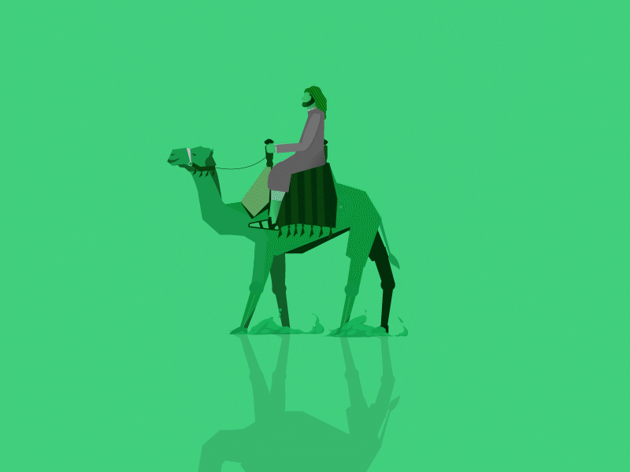

Biographies
Biographies

Al-Imam Muîn ad-Dîn
Imam Al-Nawawi
Né en 631 de l’Hégire, soit en 1233 du calendrier grégorien, dans le village de Nawā dans la région de Ḥūrān au
Sud de la Syrie, il est une figure de l'école chaféite, considéré comme l’éditeur...
Mouhammad al-Boukhârî
Imam Al-Boukhârî
Né en 631 de l’Hégire, soit en 1233 du calendrier grégorien, dans le village de Nawā dans la région de Ḥūrān au
Sud de la Syrie, il est une figure de l'école chaféite, considéré comme l’éditeur...
Muslim ibn al-Ḥajjāj
Imam Muslim
Né en 631 de l’Hégire, soit en 1233 du calendrier grégorien, dans le village de Nawā dans la région de Ḥūrān au
Sud de la Syrie, il est une figure de l'école chaféite, considéré comme l’éditeur...